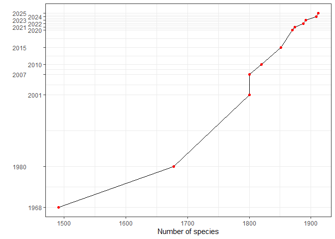

The avesperu package provides access to the most up-to-date and comprehensive dataset on Peru’s avian diversity. As of September 29, 2025, the list includes 1,916 bird species, reflecting significant taxonomic changes and updated validations based on recent scientific publications, photographs, and sound recordings deposited in accredited institutions. The classification follows the guidelines set by the South American Checklist Committee (SACC).
Species Categories
Each species in the dataset is classified into one of the following categories, reflecting its status in Peru:
- X Resident: 1,547 species
- E Endemic: 119 species
- NB Migratory (non-breeding): 139 species
- V Vagrant: 85 species
- IN Introduced: 3 species
- EX Extirpated: 0 species
- H Hypothetical: 23 species
This results in a total of 1,916 species, showcasing Peru’s extraordinary bird diversity and the ongoing refinement of its avifaunal checklist.
Features
The avesperu package is designed to streamline access to this data for researchers, conservationists, and bird enthusiasts alike. It provides:
A comprehensive and updated bird species dataset following the latest SACC classification.
Taxonomy validation tools, ensuring consistency with international standards.
Fuzzy matching capabilities for improved species name retrieval and validation.

Insights and Trends
The chart shows the steady increase in the number of bird species recorded in Peru from 1968 to 2025, reflecting continuous research and improvements in taxonomic resolution:
A substantial jump occurred between 1968 and 1980, with 187 new species recorded.
In recent years, updates have slowed but continued to increase steadily, reflecting meticulous reviews of published records and taxonomic refinements.
Suggested citation:
citation("avesperu")
#> To cite avesperu in publications use:
#>
#> Santos - Andrade, PE. (2025). avesperu: Access to the List of Birds
#> Species of Peru. R package version 0.0.6
#>
#> A BibTeX entry for LaTeX users is
#>
#> @Manual{,
#> title = {avesperu: Access to the List of Birds Species of Peru},
#> author = {Paul E. Santos - Andrade},
#> year = {2025},
#> note = {R package version 0.0.6},
#> }
#>
#> To cite the avesperu dataset, please use: Plenge, M. A. Version
#> [23/06/2025] List of the birds of Peru / Lista de las aves del Perú.
#> Unión de Ornitólogos del Perú:
#> https://sites.google.com/site/boletinunop/checklistInstallation
You can install the avesperu package from CRAN using:
install.packages("avesperu")
# or
pak::pak("avesperu")Also you can install the development version of avesperu like so:
pak::pak("PaulESantos/avesperu")Usage
Here’s a quick example of how to use the avesperu package:
library(avesperu)
#> This is avesperu 0.0.6
#> UNOP database has been updated! New version: 29 de septiembre de 2025
splist <- c("Falco sparverius",
"Tinamus osgoodi",
"Crypturellus soui",
"Thraupis palmarum",
"Thamnophilus praecox")
search_avesperu(splist = splist)
#> name_submitted accepted_name order_name family_name
#> 1 Falco sparverius Falco sparverius Falconiformes Falconidae
#> 2 Tinamus osgoodi Tinamus osgoodi Tinamiformes Tinamidae
#> 3 Crypturellus soui Crypturellus soui Tinamiformes Tinamidae
#> 4 Thraupis palmarum Thraupis palmarum Passeriformes Thraupidae
#> 5 Thamnophilus praecox Thamnophilus praecox Passeriformes Thamnophilidae
#> english_name spanish_name status dist
#> 1 American Kestrel Cernícalo Americano Residente 0
#> 2 Black Tinamou Perdiz Negra Residente 0
#> 3 Little Tinamou Perdiz Chica Residente 0
#> 4 Palm Tanager Tangara de Palmeras Residente 0
#> 5 Cocha Antshrike Batará de Cocha Residente 0- The package not only provides access to the list of bird species recorded in Peru but also excels in resolving potential typos or variations in species names through fuzzy matching. It ensures accurate retrieval by intelligently recognizing and accommodating slight discrepancies in the input names, making it a robust tool for working with diverse and sometimes inconsistent datasets.
splist <- c("Falco sparverius",
"Tinamus osgodi",
"Crypturellus sooui",
"Tinamus guttatus",
"Tinamus guttattus",
"Thamnophilus praecox")
search_avesperu(splist = splist, max_distance = 0.05)
#> name_submitted accepted_name order_name family_name
#> 1 Falco sparverius Falco sparverius Falconiformes Falconidae
#> 2 Tinamus osgodi Tinamus osgoodi Tinamiformes Tinamidae
#> 3 Crypturellus sooui Crypturellus soui Tinamiformes Tinamidae
#> 4 Tinamus guttatus Tinamus guttatus Tinamiformes Tinamidae
#> 5 Tinamus guttattus Tinamus guttatus Tinamiformes Tinamidae
#> 6 Thamnophilus praecox Thamnophilus praecox Passeriformes Thamnophilidae
#> english_name spanish_name status dist
#> 1 American Kestrel Cernícalo Americano Residente 0
#> 2 Black Tinamou Perdiz Negra Residente 1
#> 3 Little Tinamou Perdiz Chica Residente 1
#> 4 White-throated Tinamou Perdiz de Garganta Blanca Residente 0
#> 5 White-throated Tinamou Perdiz de Garganta Blanca Residente 1
#> 6 Cocha Antshrike Batará de Cocha Residente 0